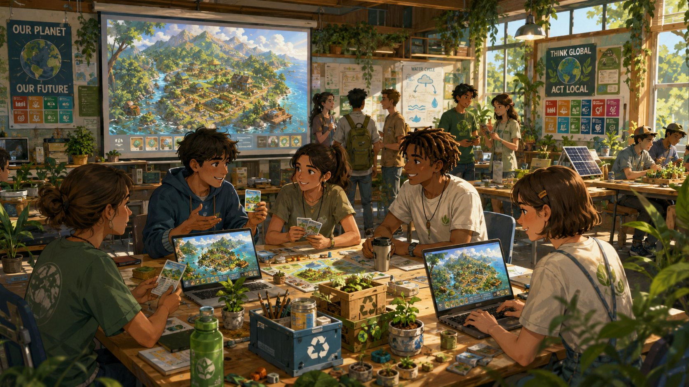

跳到主要內容
森循島
永續科普教育遊戲
首頁
計畫理念
玩法科普
永續影響
執行規劃
團隊介紹
合作聯絡
開始遊戲
首頁
計畫理念
玩法科普
永續影響
執行規劃
團隊介紹
合作聯絡
開始遊戲
執行規劃
一年期行動方案，
分階段完成與驗證
執行期間為 2026 年 6 月至 2027 年 4 月，並於 2027 年 5 月進行成果分享。每個階段都對應清楚的產出與驗證方式。
階段篩選
選擇不同階段查看里程碑。
全部
規劃設計
原型製作
測試分享
2026 / 06–07
計畫調整與內容檢核
完成永續教育行動定位。
確定世界觀、小遊戲與科普知識主題。
建立文化安全與內容邊界檢核流程。
2026 / 08–09
原型架構與基礎系統
建置農耕、採集、釣魚與建設基礎循環。
完成主視覺、介面風格與網站內容。
確立知識卡格式與教育語氣。
2026 / 10–11
永續小遊戲製作
完成溪流清潔、資源承載量與碳循環小遊戲。
整理十二則以上科普知識卡。
進行內部測試與操作修正。
2026 / 12–2027 / 02
試玩原型與工作坊設計
完成 15–20 分鐘可試玩原型。
設計前後測問卷與回饋表單。
規劃校園試玩與工作坊流程。
2027 / 03–04
試玩實施與成效蒐集
辦理至少兩場試玩或工作坊。
蒐集學習成效、問卷回饋與遊戲觀察資料。
整理社會影響與行動成果。
2027 / 05
成果展示與公開分享
完成成果報告、展示圖文與紀錄短片。
進行公開分享與計畫成果說明。
整理延伸教育應用與合作方向。
交付成果
每個成果都能回到教育現場使用
可試玩遊戲原型。
永續小遊戲模組。
科普知識卡與工作坊引導內容。
前後測問卷與學習成效整理。
成果報告與公開展示素材。
